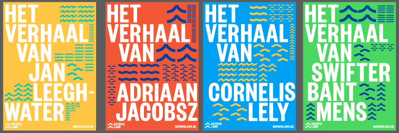
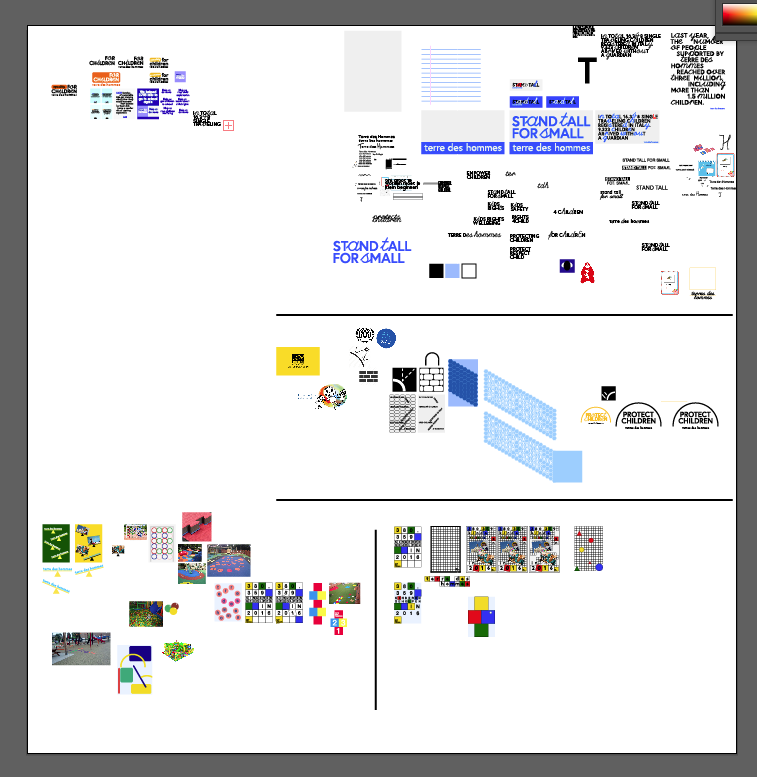

NIELS VAN DER DONK / LAVA
1. Introductie
Tijdens de periode van 7 augustus tot en met 7 oktober heb ik mijn stage gespendeerd bij de studio “Lava”. Lava is een design studio gelokaliseerd in Amsterdam Noord (image 1). Bij Lava komen alle vormen van design te pas; Web design, huis stijlen, posters, AR/VR, editorial en alle andere vormen van digitale media. Ze beschrijven zichzelf als een studio met wortels in editorial design, maar met een sterke band met visual storytelling. Ze proberen combinaties te maken met design en technologie en nodigen de klanten uit met nieuwe vormen van design te spelen. Sinds 2013 zijn ze niet alleen gelokaliseerd in Amsterdam, maar hebben ze ook een studio in Bejing (image 2). De opdrachtgevers zijn onder te verdelen onder de volgende categorieënen: Commercieel, cultureel, editorial, educatie, events, politiek, media, goede doelen, theater en zelf begonnen projecten. Over het algemeen staan ze vooral bekend om hun huisstijlen die ze hebben gemaakt voor vele klanten zoals Rijksmuseum, Diabetes fonds (image 3), Impakt, ArtEZ (image 4) en nog vele anderen. Voor mij was dit de rede om mijn stage bij Lava te volgen.
“With strong roots in editorial design, we are trained to work as visual storytellers. Over the years, this way of working has led to a unique approach to concept development using all sorts of (digital) media. Within our Lava Lab we challenge our clients to experiment and research new opportunities in design & technology. At the beginning of 2013 we established our Beijing office, kickstarting the Chinese part of Lava.”
- http://lava.nl/about
2. Waarom Lava?
Voordat ik mijn opleiding begon op de Royal Academy of Art, heb ik een grafisch ontwerpen studie genoten op het Mediacollege te Amsterdam. Hier heb ik veel geleerd over het creëren van huisstijlen, maar de afgelopen 3 jaar op het KABK heb ik hier niet meer mee te maken gekregen. Ik vind het belangrijk om deze “skill” niet te vergeten, daarbij wilde ik zien of ik mijn nieuwe skills kon toepassen bij het maken van identiteiten. Dit heb ik ook overlegd bij mijn sollicitatie gesprek bij Lava. Mijn leer objecten waren om op het gebied van communicatie beter te worden, leren hoe het is om te werken in een team, identiteiten creëren, en voor opdracht gevers te werken inplaats van zelf geïnitieerde projecten.
Ookal kon ik hen niet veel voorbeelden laten zien van mijzelf laten zien die te maken hadden met huisstijlen, kreeg ik meteen na mijn gesprek te horen dat ze de andere sollicitanten gingen afzeggen en mij graag als onderdeel van het team wilden toevoegen. Een maand later kon mijn stage meteen beginnen.
3. Het begin
Door de eerste week heen kreeg ik te maken met al mijn collega’s. Daan Hornstra, mijn stagebegeleider, waar ik meestal bij terecht kom als ik een vraag heb over het visuele gedeelte van opdrachten. Anon Lamberg, een oud student van de KABK met heel veel kennis op het gebied van codering. Mantas Rimkus, een oud student van Willem de Kooning, die net een jaar bij Lava werkt. Noortje Boer en Lisa van Kleef, allebei werkzaam als designers bij Lava. Frank Smolenears, studio manager en Klasien van de Zandschulp, actief bij Lava Lab, het meer interactieve zusje van Lava.
Dansmakers
Daan besloot dat het handig zal zijn om te beginnen met een kleine opdracht, zodat ik het werk process bij Lava meer zou begrijpen. Ik vond dit zelf ook erg fijn zodat ik niet het gevoel had er meteen midden in te springen en aan kon voelen hoe iedereen op de studio te werk ging.
Het ging hier om een poster en een flyer voor dans theater Dansmakers. Dansmakers is een dans productie huis en werkplaats mijn haar eigen stage. Het geeft een platvorm voor choreographers om te onderzoeken en experimenteren. De huisstijl bestond al (image 5), grotendeels ontwikkeld door Daan. De opdracht hierbij was om de huisstijl te gebruiken in de poster en flyer. Een niet te moeilijke opdracht maar wel interessant voor mij, aangezien ik niet veel ervaring had in het werken met een al bestaande huisstijl. Tijdens deze periode had ik email contact met de opdrachtgever, en bewerkte in mijn ontwerpen voor hen. Ook Daan gaf mij tips om hoe ik het ontwerp kon maken, aangezien hij de originele huisstijl had ontwikkeld. Een fijn project om mee te beginnen en ik kwam er snel achter over hoe iedereen te werk ging op de studio.
Batavialand
Batavialand bestaat momenteel uit de Bataviawerf en Batavialand. De twee worden samengebracht en het park zelf krijgt in de toekomst een grote update. Het park draait helemaal om de geschiedenis van het gevecht van water en Nederland.
“Batavialand is op 1 juli 2017 ontstaan uit een integratie van de Bataviawerf, een deel van Nieuw Land Erfgoedcentrum en het Maritiem Depot van de Rijksdienst voor het Cultureel Erfgoed. Samen vertellen zij in Batavialand het prachtige Nederlandse verhaal over het leven op de grens van land en water. Een verhaal over hoe wij als natie ons gevormd hebben, over de totstandkoming van dat unieke Nederlandse DNA dat over de hele wereld geroemd wordt.”
- https://www.batavialand.nl/over-ons
Lava kreeg de opdracht om een identiteit te ontwikkelen die kon meegroeien met het park, met zicht op de toekomst. Toen ik mijn stage begon, stond het project in haar eerste schoenen. Daan vroeg mij eerst om te werken aan schetsen en ideetjes voor de identiteit (image 6, 7, 8, 9 en 10). Tijdens de schets fase kon ik vrijwel altijd bij Daan terecht om ideetjes te bespreken en te overleggen. Ook hij was constant met schetsen aan het werk en ook van zijn kant vroeg hij mij regelmatig om mijn opinie. Het was interessant voor mij omdat we allebei elementen van elkaar gebruikten om uiteindelijk met hetzelfde soort idee uit te komen. Een fijn process waarbij ik het gevoel kreeg dat ook mijn opinie gewaardeerd werd en ook daadwerkelijk gebruikt. Na iedere 2 weken hebben we de schetsen voorgelegd aan onze mede collega’s om ook daaruit weer aanpassingen te maken. Uiteindelijk hebben gekozen om alle design vormen uit te werken met verschillende iconen die meerdere soorten water representeren (image 11, 12, 13 en 14). De indentiteit werd meer een soort techniek. Ik heb zelf ook wat ervaring met coderen en wilde nog iets extra’s aanbieden door een tool te schrijven die automatisch beelden vertaald naar deze iconen. Nadat de identiteit een soort van klaar was werd aan mij gevraagd om te onderzoeken hoe we het daadwerkelijk konden gebruiken in verschillende vormen. Dit was een vrij langdurig en intens process met veel trial and error momenten. Ook heb ik als enige gewerkt aan de identiteit in motion (image 15), iets waar ik niet veel ervaring in hebt maar daarom ook zo leuk. Omdat ik hier zo lang mee aan het werk was, en het nog niet aan de klant was gepresenteerd besloot ik ook om een andere identiteit te ontwikkelen (image 16, 17 en 18). Dit werd wel geapprecieerd door mijn collega’s maar later werd besloten om toch voor één identiteit te gaan om de klant niet te verwarren. Nadat alles klaar stond om te presenteren moest de daadwerkelijke presentatie nog gemaakt worden, het was goed voor mij om te zien, en ook iets waar ik veel waarde aan hecht, hoe deze presentatie werd vormgegeven. Ik heb hier veel geleerd over hoe je je ideeën brengt naar de klant, die misschien niet zoveel ervaring op het gebied van design heeft.
De presentatie was goed verlopen en in gebruik worden genomen, hierna heb ik veel gewerkt aan verschillende uitingen. Ook werd er gevraagd door de klant om een video te maken, weer motion werk waar ik later in mijn stage vaker voor gevraagd werd.
KLIK festival
Een animatie festival wat grotendeels afspeelt in het Eye gebouw in Amsterdam Noord.
“The KLIK foundation is a national and international force in provocative quality animation. With the festival as KLIK's flagship, and other exciting activities happening in its wake, we bring our passion for and knowledge of animation to a wide audience. With different themes each year we’re not just entertaining our visitors, we’re also trying to make them think about larger issues at play in society. At the same time, KLIK functions as a platform, knowledge hub and catalyst for the sector.”
- http://www.klik.amsterdam/about/mission
Vorig jaar had mijn collega Mantas voor hun de gehele identiteit gemaakt, en nu kwamen ze bij Lava terug om een schema boekje te ontwerpen. Het design stond, jammer genoeg, vrij vast. Ik wist dat dit een langdurig process ging worden, maar ik werd wel enthousiast omdat dit compleet mijn project zou worden, waarbij ik constant contact had met de organisatoren. Ook bestaat zo’n boekje uit zoveel informatie en kan er zo veel mis gaan, je moet hiervoor vrij precies zijn. Ik sta zelf niet echt bekend als een ontwerper die erg precies is, maar ik wilde deze kans graag gebruiken om te laten zien dat ik dit wel kan. Ik kreeg toegang tot verschillende google documenten die constant werden aangevuld met verschillende fotografie en informatie over de makers van de verschillende animaties. Omdat ik vrij snel door kreeg dat er heel veel mis kon gaan, heb ik het indesign document aangepast zodat er makkelijker informatie aan toegevoegd kon worden en er minder snel fouten gemaakt konden worden. Op de studio werd er gezegd dat ze het fijn vonden dat ik erg snel te werk ging, en er niet tot weinig fouten werden gemaakt. Ook heb ik verschillende keren de organisatoren gesproken die langs kwamen op de studio om design keuzes te bespreken en aanpassingen te maken. Uiteindelijk is het een mooi boekje geworden (image 18, 20 en 21), en is het gehele process en contact met de klant goed verlopen. Ze waren erg blij met mijn snelheid en precisie. Ook vond ik het interessant om het indesign document aan te passen zodat als er volgend jaar weer een schema boekje gemaakt moet worden, er makkelijker mee gewerkt kan worden.
Strijp-S
“Strijp-S is a neighborhood and former industrial park in the Eindhoven distrtict of Strijp. The area belonged to electronics company Philips. Since 2000 creative companies and housing have been established in the former industrial buildings. Eindhoven Strijp-S railway station serves the district.”
- http://www.strijp-s.nl/nl/home
Strijp-S kwam naar Lava toe omdat ze verschillende technologie, door hen ontwikkeld, wilden laten zien op de Designbeurs 2017. De technologie waren groten deels gefocust op human tracking, misschien technologie met een negatieve lading. Daarom wilde ze dat wij het op een positieve en begrijpelijke manier konden brengen aan het publiek.
Op de studio werd mij gevraagd om verschillende schetsen te maken van hoe dit gepresenteerd kon worden (image 22, 23, 24 en 25). Ik heb hiervoor veel snelle schetsen gemaakt en deze gepresenteerd aan mijn collega’s. Een aantal van deze ideeën zijn later uitgewerkt door anderen en ook daadwerkelijk gebruikt bij de expositie. Daarbij heb ik de animatie gemaakt die getoond werd bij de ingang van Strijp-X.
IIAS
De identiteit voor IIAS was grotendeels al ontwikkeld door andere collega’s. Maar omdat ze hadden gezien dat ik kan coderen vroegen ze mij om schetsen te maken voor hun website. Dit vond ik erg leuk om te doen omdat ik tegenwoordig veel bezig ben met websites bouwen. Ook moest er veel nagedacht worden over de functionaliteit, iets wat ik nog wel eens wil laten liggen. Uiteindelijk heb ik verschillende websites ontwikkeld (image 26 en 27), en daarna een animatie gemaakt (image 28). Daan vertelde mij dat tijdens de presentatie van IIAS, iedereen nog vrij zacht reageerde op de identiteit maar erg enthousiast werd nadat mijn video van de website werd getoond. Het was interessant omdat ik compleet mijn eigen ideeën kon uitwerken, met oog op de identiteit zelf. Ook werd ik weer gevraagd om een animatie te ontwikkelen voor het logo (image 29).
UNSENSE
Een vrij korte opdracht waar er weer gevraagd werd naar mijn motion skills. Het logo stond al vast, alleen moest er een animatie gemaakt worden waar het logo in motion werd gebracht (image 30).
Terre Des Hommes
Voor mij was dit de langste, maar zeker mijn favoriete opdracht waar alle nieuw geleerde skills moesten worden gebruikt.
“Terre des Hommes voorkomt dat kinderen worden uitgebuit, haalt kinderen uit uitbuitingsituaties en zorgt ervoor dat deze kinderen zich in een veilige omgeving kunnen ontwikkelen.
Terre de Hommes werkt aan een wereld waarin alle kinderen een menswaardig bestaan hebben en kunnen opgroeien tot zelfstandige volwassenen. Een wereld waarin kinderen niet meer worden uitgebuit. Wij gaan net zo lang door tot dit bereikt is.“
- https://www.terredeshommes.nl/over-ons
Terre des Hommes is een vrij bekend goed doel voor kinderen, maar zonder naamsbekendheid. Daarbij werkt TDH in verschillende landen waar bij allemaal een andere identiteit word gebruikt. Lava werd gevraagd voor een pitch om een identiteit te ontwikkelen die voor alle landen gebruikt kon worden. Samen met Noortje en Lisa werden ik op dit project gezet. Dit was de eerste keer dat ik echt de ontwikkeling van een identiteit van begin tot (bijna) eind kon bijwonen. In de eerste weken werkten we puur aan onderzoek, en presenteerde we iedere week aan elkaar onze bevindingen. Hierna begonnen we met het schetsen, waarbij we ook constant ons werk aan elkaar lieten zien. Ik heb hiervoor erg veel geschetst omdat het een erg moeilijke opdracht was, hierdoor konden we zo veel mogelijk opties uitproberen en weerleggen. Uiteindelijk hebben Lisa en ik allebei onze eigen identiteit uitgewerkt en gepresenteerd aan onze collega’s. Hieruit bleek dat we beiden bepaalde elementen hadden die gecombineerd konden worden tot één identiteit. Ik mag de schetsen helaas niet laten zien, maar hierbij wel wat screenshots van mijn illustrator bestanden (image 31, 32, 33, 34, 35, 36 en 37).
Conclusie
Tijdens mijn stage bij Lava heb ik veel geleerd over het werken in een team. Ik ben er gewend aan om alleen te werken, en soms te discussiëren met leraren, maar over het algemeen hangt het altijd van jezelf af. In een team werken is interessant omdat je ook soms met ander mans ideeën moet werken en andersom. Ik heb ontdekt dat dit vaak leid tot meer interessantere ideeën, en hoe je samenwerkt over het algemeen.
Ook heb ik een nieuwe skill ontwikkeld, namelijk animeren. Het was goed om te zien dat ik vaak gevraagd werd voor motion ontwikkeling. Het is iets wat ik door de jaren heen heb neergelegd maar fijn om dit weer op te pakken en nu beter in te zijn.
Ik ben ook erg blij om te zien dat ik precies kan werken als het nodig is. Het is een punt waar ik vaak bij stil stond en niet vaak mee te maken kreeg voor mijn stage. Bij Lava werd veel werk doorgestuurd of stuurde ik het zelf naar klanten en dan moet alles wel kloppen.
Ook vind het erg belangrijk om te leren met klanten om te gaan over het algemeen. Hoe maak je werk dat de klant kan begrijpen en pas je je misschien wel “gekke” style aan om het te gebruiken in een meer communicatieve omgeving.
Over het algemeen ben ik erg blij met mijn stage periode bij Lava, ik heb veel geleerd over hoe het is om te werken voor klanten en het werken in een studio met andere mensen. Ook al voelde Lava niet als een studio die erg bij mijn design style voelde, voelde ik mij zeker thuis. Ik heb ontwerp ideologieën opgepakt die ik eigenlijk door mijn studie op de KABK ben verloren. Ik kan Lava aanraden voor studenten die meer communicatief en functioneel werk willen maken, een veel verantwoordelijkheid willen hebben. Nadat mijn stage was verlopen is er vergaderd of ze mij misschien ook op de studio wilden hebben na mijn opleiding, dit gaat afhangen van het aantal werk dat ze rond die tijd hebben, maar het was onwijs goed om te horen dat ze zo positief over mij zijn. Ik heb zelf met ze besproken graag een aantal dagen in de week bij hun te willen werken, aangezien ik veel dingen heb gedaan die je misschien bij de wat meer artistiekere kant van grafisch ontwerpen laat liggen. Ik vind het erg belangrijk om deze punten te behouden en daarom zou ik graag ook in dit vakgebied willen werken.
2. Studio Lava Bejing 1
3. Diabetes fonds 1
4. ArtEZ
5. Dansmakers
6, 7, 8, 9, 10. Batavialand schetsen

11, 12, 13, en 14. Batavialand schetsen 2

15. Batavialand motion
16, 17, 18. Batavialand schetsen 3
19, 20, 21. KLIK boekje

22, 23, 24, 25. Strijp-X schetsen
26, 27. IIAS website schetsen
28. IIAS website
29. IIAS logo animatie
30. Unsense logo animatie
31, 32, 33, 34, 35, 36, 37. Terre des Hommes schetsen
